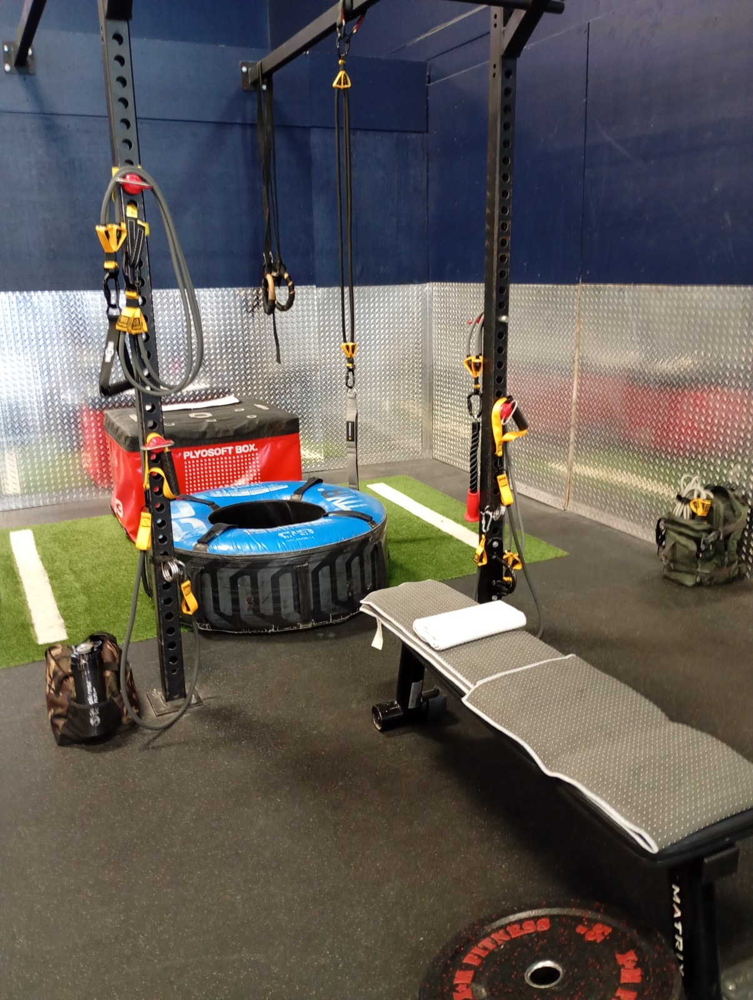

B01 / KUZARO
255LBPROJECT 100 / KINETICS LAB
Your training week.
Three muscle-focus days, then two Pilates full-body days. Explore the setup behind each programme.
Band equipment, anchor setups & reference images Expand full reference +
Rig and attachments

PROJECT 100 / FIELD SCAN01 / 29
High-anchor lat sweep station
Lats · rear delts · trunk stabilizers
High → low pull · paired handles · bench support01 / 29
HEX-GRID / KUZARO
Reference band bundles
PHOTO REFERENCE / HPYGN + TRIBE2 × (2 × 65 lb)130 lb per side · 260 lb combined nominal
B02 / KUZARO
300LBThe Titan
4 × 75 lbB03 / KUZARO
130LB / SETThe Enforcer
2 × 65 lb, twiceper set · two matched setsB04 / KUZARO
165LBThe Tricep Specialist
3 × 55 lbTHEFITGUY single ropeB05 / KUZARO
180LBThe Viper
4 × 45 lbB06 / KUZARO
140LBThe Scalpel
4 × 35 lbBrowse every setup and attachment using the image selector arrows or swipe. Each selection loads into the large display. Muscle focus and pull direction appear in the main frame. Highlights link each pictured configuration to the current bundle directory.
Band labels are nominal ratings. Their sums identify the bundles; they are not measured force at the hands, a constant load through the repetition, or a hardware load rating.
Three anchor zones
HIGH
Overhead setups
Pulldowns and overhead work. Match the bench or kneeling support to the setup.
MIDDLE
Rows and lateral work
Body position changes the direction you resist. Keep the anchor and stance consistent.
LOW
Low-mounted setups
Upward pulls and kickbacks. Record the starting stretch, hand height and support.
RECORDED KUZARO MOVEMENTS
Movement families
Open a family for its setup, movement and source recording.
22 movements
Body positionDashed line: band routingArrow: movement path
MOVEMENT FILE / 01Prepare & driveMobility · scapular control · lower-body drive04FILES
01PREP / DRIVEDynamic band activation⌄
- Anchor / base
- Multi-anchor station; light preparatory configuration.
- Interface
- Band grips; configuration varies by session.
- Movement
- Controlled shoulder and upper-back sweeps before the working sequence.
- Execution / repeatability
- Record the starting distance and comfortable range; preparation is a separate stage from the heavy bundles.
Watch on Instagram: Warmups Stretch 001
02PREP / DRIVEProne scapular openers⌄
- Anchor / base
- Kneeling over the bench with the band line directed toward the upper back.
- Interface
- Paired band grips.
- Movement
- Supported upper-back opening and return while maintaining line tension.
- Execution / repeatability
- Keep the head aligned with the torso; compare bench position and hand path between sessions.
Watch on Instagram: Upside Down Tuesdays
03PREP / DRIVEDeep-squat scapular drives⌄
- Anchor / base
- Squat base facing the rig; upper anchor vector.
- Interface
- Paired grips.
- Movement
- Hold the squat while moving the arms through scapular pull and sweep patterns.
- Execution / repeatability
- Separate the static lower-body hold from the moving upper-body vector; avoid using a rising torso to finish the pull.
Watch on Instagram: Resistance Band Series 001
19PREP / DRIVEBand squats and kinetic drives⌄
- Anchor / base
- Portable station; anchor and stance depend on the recorded drive.
- Interface
- Band handles or the session interface.
- Movement
- Combine a squat/hip-and-knee drive with elastic resistance.
- Execution / repeatability
- Record band direction and starting distance rather than assuming all squat variations have the same loading curve.
Watch on Instagram: Hypertrophy Friday · Resistance Bands Fridays
MOVEMENT FILE / 02Pull & upper backLats · rear delts · scapular movement08FILES
04PULL / UPPER BACKKneeling dual-band lat sweeps⌄
- Anchor / base
- Bench-kneeling base; high anchor to hip direction.
- Interface
- Two ergonomic grips.
- Movement
- Sweep the hands downward toward the hips with the torso supported in a repeatable position.
- Execution / repeatability
- The high line changes the pull direction from a horizontal row. Record both sides, bench distance and band bundle.
Watch on Instagram: Resistance Band Series 004 · Hypertrophy Friday
05PULL / UPPER BACKSquat-stance lat drives⌄
- Anchor / base
- Wide squat facing high anchors.
- Interface
- Paired handles.
- Movement
- Drive the band path downward while keeping the squat position consistent.
- Execution / repeatability
- Keep the pelvis and ribcage controlled; return deliberately rather than following band recoil.
Watch on Instagram: Resistance Band Series 004
06PULL / UPPER BACKHorizontal lat and rear-delt sweeps⌄
- Anchor / base
- Middle-height or approximately horizontal line relative to the working shoulder.
- Interface
- Independent grips.
- Movement
- Sweep outward/backward through the recorded upper-back arc.
- Execution / repeatability
- Allow natural shoulder-blade movement. Changing anchor height changes the vector, so log it alongside stance and distance.
Watch on Instagram: Resistance Bands Fridays · Resistance Band Series 001
07PULL / UPPER BACKReverse flyes and Y-raises⌄
- Anchor / base
- High-anchor band grid; standing or supported base as recorded.
- Interface
- Independent handles.
- Movement
- Use outward reverse-fly and upward Y-shaped arm paths as distinct variations.
- Execution / repeatability
- Keep the fly and Y-raise entries separate in the log; they are different arm paths rather than extra repetitions of one movement.
Watch on Instagram: Resist Saturdays
08PULL / UPPER BACKHigh-to-low pulldowns⌄
- Anchor / base
- High anchor; downward diagonal pull.
- Interface
- Paired band grips.
- Movement
- Draw the arms down through the recorded high-to-low line.
- Execution / repeatability
- Keep the selected line clear of the face and hardware; compare the same starting position each session.
Watch on Instagram: Resist Saturdays · Strength Fridays
09PULL / UPPER BACKTerminal isometric lat sweep⌄
- Anchor / base
- Bent-over base at the portable station.
- Interface
- Band grips.
- Movement
- Sweep into the held finishing position before a controlled reset.
- Execution / repeatability
- Series 002 describes a 30-second hold. This is the recorded caption target, not a required duration for every session; maintain breathing and avoid forcing end range.
Watch on Instagram: Resistance Band Series 002
10PULL / UPPER BACKBench-supported unilateral row⌄
- Anchor / base
- Bench-supported torso; one working pull line.
- Interface
- Single ergonomic handle.
- Movement
- Draw one arm back while resisting rotation of the torso.
- Execution / repeatability
- Log working side, anchor level and bench orientation. Support reduces torso movement but does not make the load disappear.
Open the anatomical technique sheet: main, secondary and base support →
Watch on Instagram: Resistance Bands Fridays
17PULL / UPPER BACKSquatting face pulls⌄
- Anchor / base
- Squat base facing the band station.
- Interface
- Paired grips or rope as configured.
- Movement
- Pull toward the upper face/shoulder line while retaining the squat.
- Execution / repeatability
- Use the actual reel hand path as the reference; keep connectors away from the face and prevent sudden recoil.
Watch on Instagram: Resist Saturdays
MOVEMENT FILE / 03Triceps & elbow extensionOverhead · pressdown · side extension06FILES
11ELBOW EXTENSIONKneeling overhead triceps extension⌄
- Anchor / base
- Kneeling base with elevated band line.
- Interface
- Rope or grip shown in the session; current dedicated rig uses THEFITGUY single rope.
- Movement
- Bend and extend the elbows while retaining a consistent upper-arm position.
- Execution / repeatability
- Match the upper-arm angle and kneeling distance; control the return instead of letting the bands pull the arms abruptly.
Watch on Instagram: Resistance Band Series 001 · Strength Fridays
12ELBOW EXTENSIONBench-supported overhead triceps⌄
- Anchor / base
- Elbow supported on the bench pad; elevated line.
- Interface
- THEFITGUY single rope for the current Tricep Specialist bundle.
- Movement
- Extend the elbow from the supported overhead position.
- Execution / repeatability
- Series 004 describes a one-second finishing squeeze and a three-second return. Keep these as session cues, with smooth motion and no bouncing.
Watch on Instagram: Resistance Band Series 004
13ELBOW EXTENSIONSeated straight-bar pressdowns⌄
- Anchor / base
- Seated bench base; band line above the working hands.
- Interface
- Straight bar.
- Movement
- Press the bar downward through elbow extension.
- Execution / repeatability
- The bar links the hands; keep wrists comfortable and torso motion consistent. A straight-bar pressdown is distinct from the short-band Tribe bar squat/press system.
Watch on Instagram: Resistance Band Series 004
14ELBOW EXTENSIONLow-anchor kickbacks⌄
- Anchor / base
- Low anchor; split stance; upper arm beside the torso.
- Interface
- Single grip.
- Movement
- Extend the elbow backward against the low line.
- Execution / repeatability
- Hold the upper-arm position without swinging the shoulder to create the last part of the rep. Log the working side.
Watch on Instagram: Resistance Band Series 004
15ELBOW EXTENSIONSide triceps extensions⌄
- Anchor / base
- Lateral line at the rig; stance follows the recorded variation.
- Interface
- Single grip or rope variation.
- Movement
- Extend across the side-directed band vector.
- Execution / repeatability
- Document which side of the rig supplies resistance; do not combine side-directed and overhead versions as one setup.
Watch on Instagram: Resist Saturdays
21ELBOW EXTENSIONCorebag suspension triceps and unilateral drive⌄
- Anchor / base
- High suspension anchors; knees on the 15 kg / 33 lb Corebag.
- Interface
- Suspension handles / straps, rather than an elastic-band bundle.
- Movement
- Bilateral elbow extension and a separate one-arm variation.
- Execution / repeatability
- Series 003 records 10–12 reps and a three-second return. The rolling support adds balance demands; it is an advanced recorded variation, not the baseline band station.
Watch on Instagram: Resistance Band Series 003
MOVEMENT FILE / 04Core & stabilityBracing · controlled rotation · supported balance04FILES
16CORE / STABILITYSeated band woodchoppers⌄
- Anchor / base
- Seated base; diagonal line from the rig.
- Interface
- Band handle configuration shown in the session.
- Movement
- Rotate through the recorded diagonal hand path with a controlled return.
- Execution / repeatability
- Record left-to-right and right-to-left separately, including anchor height. Avoid using an abrupt twist to overcome the resistance.
Watch on Instagram: Resist Saturdays
18CORE / STABILITYElevated core compression⌄
- Anchor / base
- Kneeling on the 15 kg Corebag at the band station.
- Interface
- Band attachment from the recorded sequence.
- Movement
- Bring the ribcage toward the pelvis against the band line.
- Execution / repeatability
- Series 002 uses an elevated cylindrical support. Log the support and balance conditions; this differs from a stable floor-kneeling version.
Watch on Instagram: Resistance Band Series 002
20CORE / STABILITYResisted torso drops⌄
- Anchor / base
- Rig-facing base with a resisted torso movement.
- Interface
- Recorded band interface.
- Movement
- Controlled torso lowering and return through the session range.
- Execution / repeatability
- Keep this separate from free-weight good mornings and box reverse hyperextensions. Exact range and routing should follow the recorded setup.
Watch on Instagram: Resist Saturdays
22CORE / STABILITYSingle-leg suspension hinge and box hinge⌄
- Anchor / base
- High suspension lines; single-leg floor base or kneeling box base.
- Interface
- Suspension straps.
- Movement
- Hinge with strap support while maintaining the chosen base.
- Execution / repeatability
- Record the support height and working leg. Strap/bodyweight variations belong to the connected rig session but are not assigned a nominal elastic-band load.
Watch on Instagram: Resistance Band Series 003 · Plyosoft Box Core 001
SET / EXECUTE / RECORD
The session flow.
- Prepare: identify the anchor level, inspect the band and connectors, clear the pull path, and position the bench or support.
- Index: record the bundle, grip, working side, stance and starting distance. Use the same reference point when comparing sessions.
- Activate: start with the recorded band warm-up and scapular mobility patterns before the working sequence.
- Work: group the pull, press, triceps and core variations by attachment position. The reel captions repeatedly emphasize a controlled return rather than recoil.
- Transition: sled work, plate carries and free weights are adjacent stations, not extra elastic-band tension. Keep those loads separate in the log.
- Record: note repetitions, holds, perceived effort, range and next-day response before changing the configuration.
Reel sources used for this directory
- RESISTANCE_BAND_SERIES_001
- RESISTANCE_BAND_SERIES_004
- PLYOSOFT_BOX_CORE_001
- RESISTANCE_BAND_SERIES_002
- RESISTANCE_BAND_SERIES_003
- WARMUPS_STRECH_SERIES_001
- HYPERTROPHY_FRIDAY
- RESISTANCE_BANDS_FRIDAYS
- STRENGHT_FRIDAYS
- RESIST_SATURDAYS
- CALIBRATED HYPERTROPHY
- UPSIDE_DOWN_TUESDAYS
- SATURDAY
Current owner-confirmed bundle counts take precedence over earlier reel configurations. Movement descriptions document my sessions; they do not establish a medical recovery outcome.
HPYGN + Tribe bar setupTwo matched pairs · 130 lb nominal per sideSetup details +
Two HPYGN heavy-duty kits connect to the Tribe Lifting chrome bar: three threaded sections with rotating eyelets.
- Left pair
- 2 × 65 lb
- Right pair
- 2 × 65 lb
- Combined label rating
- 260 lb nominal
Four 65 lb bands in total. This is separate from the KUZARO Enforcer’s two matched sets. Actual resistance varies with stretch and geometry; your trainer selects the configuration for each exercise.
Pilates equipment, movement atlas & setup reference Expand full reference +
PILATES BAR / FULL-BODY CONTROLOne bar.
One bar.
A connected body.
Legs create the drive. The trunk steadies the line. Hands hold the bar in position or guide its path. This compact system connects lower-body motion, upper-body control and paired resistance.
BAR POSITIONShoulder-held · overhead · in frontRESISTANCE PATHFoot loops · paired bands · selected anchorSESSION FOCUSLegs · hips · back · arms · trunk
TWO MOUNTING POSITIONS / SAME SHORT-BAND SYSTEMLow or mid.
Low or mid.
Set the working line.

LOW / RACK MOUNT
Low-mounted bar
The chrome bar sits close to the rack base, connected on both sides through the short black band assemblies. This front view makes the low attachment position visible.

MID / RACK MOUNT
Mid-mounted rack variation
The short-band bar is mounted between the iron rack uprights at mid height. This owner-identified view shows the paired black assemblies, padded chrome bar and the bench positioned in front of the station.
Swipe through the photographs · tap any image to enlarge.
Mounting variations confirmed by the owner. The photographs show arrangements from different sessions; the photographed 2 × 65 lb pairing documents that equipment arrangement. Your trainer sets the resistance for your sessions.
HPYGN / PILATES MOVEMENT ATLASHold the position.
Hold the position.
Control the movement.
Six full-body movement families from the HPYGN Pilates kit illustrations. Open a folder for bar position, muscle focus and the resistance path.
Body positionDashed line: band routingArrow: movement path
PILATES PATTERN / 01Shoulder-held squatQuads · glutes · trunk
Lower / riseIllustrative position · arrow shows movement path
- Position / interface
- Bar held across the upper shoulders; hands keep it steady.
- Line of pull
- Feet to bar · paired vertical band lines.
- Movement
- Bend at the hips and knees, then return to standing while maintaining the bar position.
- Control point
- Keep the bar supported across the upper shoulders, clear of the neck. The legs move while the upper-body position stays controlled.
- Record this setup
- Foot placement, band starting length, bar position and squat depth.
PILATES PATTERN / 02Split stance & lungeQuads · glutes · hip stabilizers
Lower / riseIllustrative position · arrow shows movement path
- Position / interface
- Shoulder-held bar; split stance shown in the supplied kit imagery.
- Line of pull
- Foot-supported band line · asymmetric stance.
- Movement
- Lower and rise through the split stance with the bar steady.
- Control point
- Compare left and right foot placement and band routing. The bar position is held steady; the shoulders are not forcibly locked.
- Record this setup
- Lead leg, stance length, band routing and depth; record each side separately.
PILATES PATTERN / 03Standing overhead pressDeltoids · triceps · trunk
Press / returnIllustrative position · arrow shows movement path
- Position / interface
- Bar starts in front of the shoulders; bands connect below.
- Line of pull
- Feet to bar · upward hand path against elastic tension.
- Movement
- Press the bar upward and return under control.
- Control point
- Keep the paired band paths clear of the face. This is an upper-body movement, distinct from holding the bar steady during a squat.
- Record this setup
- Band starting length, grip spacing and start / finish bar height.
PILATES PATTERN / 04Hinge & rowing familyUpper back · lats · posterior chain
Pull / returnIllustrative position · arrow shows movement path
- Position / interface
- Hip hinge; bar or separate kit handles held in front.
- Line of pull
- Low line · pull toward the torso.
- Movement
- Maintain the chosen torso angle while pulling and returning.
- Control point
- Manufacturer imagery shows handle-based pulling as well as bar work. Match the illustration to the actual interface used.
- Record this setup
- Bar or handles, torso angle, anchor position and pull range.
PILATES PATTERN / 05Leg straps & hip extensionGlutes · hamstrings · hip stabilizers
Extend / returnIllustrative position · arrow shows movement path
- Position / interface
- Leg / ankle strap with a supported stance or floor base.
- Line of pull
- Strap to anchor · rearward leg path.
- Movement
- Extend and return the working leg without letting the trunk follow the motion.
- Control point
- This kit-accessory family uses straps and its own routing. It does not automatically use the heavy 2 × 65 lb bar pairing.
- Record this setup
- Working leg, strap position, support and anchor location.
PILATES PATTERN / 06Front-bar arm workBiceps · forearms · trunk
Curl / returnIllustrative position · arrow shows movement path
- Position / interface
- Bar held in front; matched left and right connections.
- Line of pull
- Low band line · elbow-flexion path.
- Movement
- Curl through the selected range and lower with control.
- Control point
- Keep the upper arms steady and record the starting stretch. Use the actual selected combination rather than assuming the maximum kit sum.
- Record this setup
- Grip spacing, starting band length and elbow-flexion range.
Kit examples and personal rig are separate configurations. The movement atlas follows the supplied HPYGN illustrations; the photographs show two bundles of 2 × 65 lb as a reference. Your personal trainer selects the matched band configuration for each exercise. The 260 lb nominal combination is not prescribed for every illustrated pattern.
My rack-mounted bar adaptations
Bar squats
- Anchor / base
- Owner-confirmed short-band bar configuration.
- Interface
- Tribe bar with two bundles of 2 × 65 lb.
- Movement
- Squat and return through the selected range while maintaining a consistent bar position.
- Execution / repeatability
- Log the starting band length, foot position, bar placement and depth. Keep the left/right routing matched; log whether the station is low- or mid-mounted. The nominal 260 lb total is not a free-weight equivalent.
Recorded in: Owner-confirmed setup
Bar presses
- Anchor / base
- Owner-confirmed short-band bar configuration; stance and routing logged for each version.
- Interface
- Threaded Tribe bar and rotating eyelets.
- Movement
- Press through the selected path with both paired-band bundles supplying resistance.
- Execution / repeatability
- Record whether the press is standing or otherwise supported. Use the low- or mid-rack attachment position from the actual session and record the starting line of pull.
Recorded in: Owner-confirmed setup
Bar elbow-flexion / curl station
- Anchor / base
- Earlier Kinetic Rig Architecture configuration.
- Interface
- Tribe chrome bar with HPYGN short bands.
- Movement
- Bilateral bar curl through elbow flexion.
- Execution / repeatability
- The earlier reel describes this movement with an older 2 × 65 lb pairing. The current paired-band system above confirms two such pairs; it does not prove the new 260 lb nominal combination was used in that recording.
Watch on Instagram: Calibrated Hypertrophy / Kinetic Rig Architecture
Keep the comparison useful
Use the same paired-band configuration, attachment arrangement and starting stretch when comparing this system across sessions. Record repetitions, range and controlled return alongside the configuration. The compact short-band bar station and the rack-based KUZARO grid remain separate entries in the training log.
MOVEMENT ATLAS
See the movement.
Six illustrated techniques · Start and finish · Full guides one tap away.
1 / 6